25+ Christmas Pie Recipes for a Sweet Holiday Table
📌 Save to Pinterest
Christmas dinner ends at the pie table. This roundup gathers twenty-five Christmas pie recipes — classic apple, pumpkin and pecan pies, silky cream pies, bright meringues, hand pies and galettes — all made for a sweet holiday table. Bake one showpiece the day before, add a chilled cream pie that waits in the fridge, and let everyone take the slice they have been waiting for.
How to plan a Christmas pie table
Pick a mix, not a single style: one classic double-crust pie, one chilled or cream pie, and one hand pie or tart cover every taste. If the day is busy, lean on pies that wait — chilled cream pies, chiffon pies and make-ahead hand pies. If you are feeding a crowd, bake two different pies instead of one big one, and set out whipped cream, vanilla ice cream and a pot of coffee so everyone builds their own plate. And if you want the house to smell like Christmas before anyone sits down, start with cinnamon, ginger and brown sugar.
Good to know: Everything is written in American English, and measurements use US customary units — cups, tablespoons, and Fahrenheit — for cooks in the United States. Always follow safe food-handling guidance, and check labels for allergens when cooking for others.
Food safety: The eggs in these pies are baked through — bake until set and golden. For egg dishes, the USDA safe temperature is 160°F (71°C)..
Classic holiday pies
The pies everyone asks for first — apple, pumpkin, pecan and cherry, baked the way they have always been baked.
1. Classic Apple Pie
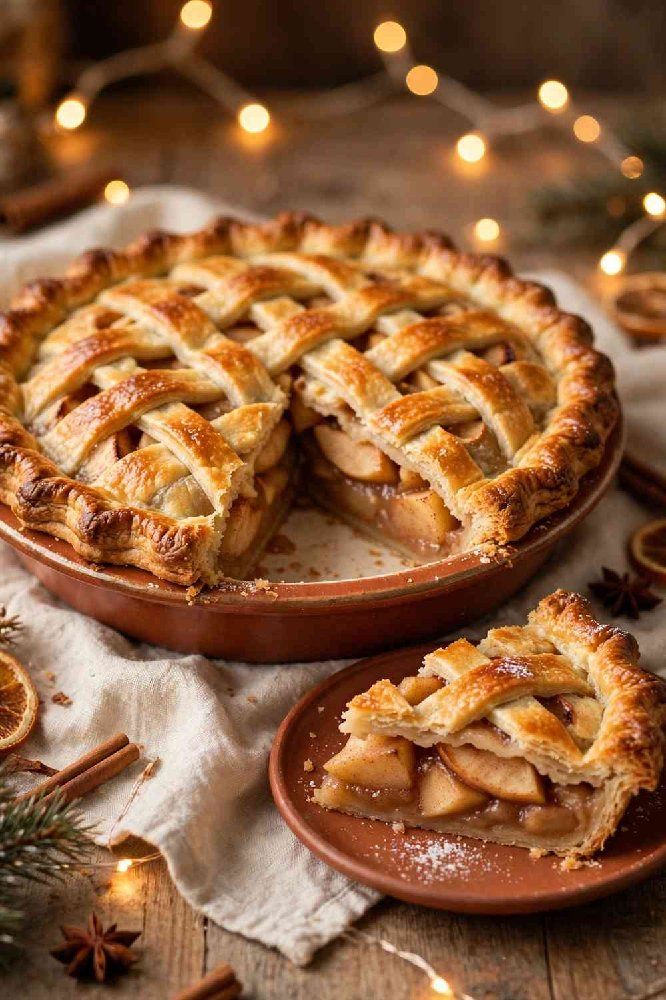
Flaky crust, spiced apple filling.
Ingredients
- 2 pie crusts
- 6 apples
- 3/4 cup sugar
- 2 tbsp flour
- 1 tsp cinnamon
- 1/4 tsp nutmeg
- 1 tbsp lemon juice
- 2 tbsp butter.
Directions
- Toss sliced apples with sugar, flour, cinnamon, nutmeg and lemon juice
- Fill the bottom crust, dot with butter and cover with the top crust
- Cut slits and bake at 425°F for 45 minutes until golden and bubbling
2. Dutch Apple Crumb Pie

Buttery streusel over spiced apples.
Ingredients
- 1 pie crust
- 6 apples
- 1/2 cup sugar
- 1 tsp cinnamon
- 1 cup flour
- 1/2 cup brown sugar
- 1/2 cup cold butter
- 1 tsp vanilla.
Directions
- Toss apples with sugar, cinnamon and vanilla; fill the crust
- Mix flour, brown sugar and butter into crumbs
- Sprinkle over the apples and bake at 375°F for 50 minutes until the topping is golden
3. Classic Pumpkin Pie

Silky spiced pumpkin in a flaky crust.
Ingredients
- 1 pie crust
- 1 can (15 oz) pumpkin puree
- 3/4 cup sugar
- 2 eggs
- 1 cup evaporated milk
- 1 tsp cinnamon
- 1/2 tsp ginger
- 1/4 tsp nutmeg
- 1/4 tsp cloves.
Directions
- Whisk pumpkin, sugar, eggs, milk and spices until smooth
- Pour into the crust and bake at 425°F for 15 minutes, then 350°F for 40 minutes until just set
- Cool completely before slicing
4. Pecan Pie
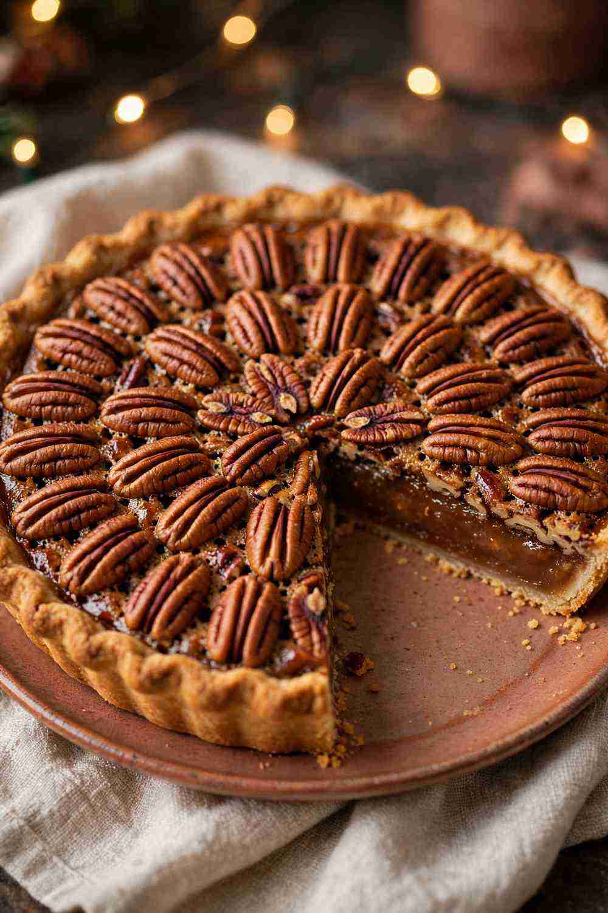
Gooey filling under crunchy pecans.
Ingredients
- 1 pie crust
- 1 cup corn syrup
- 3/4 cup sugar
- 3 eggs
- 2 tbsp butter
- 1 tsp vanilla
- 1 1/2 cups pecan halves
- pinch of salt.
Directions
- Whisk corn syrup, sugar, eggs, melted butter, vanilla and salt
- Stir in pecans and pour into the crust
- Bake at 350°F for 55 minutes until the center is just set
- Cool before slicing
5. Cherry Pie
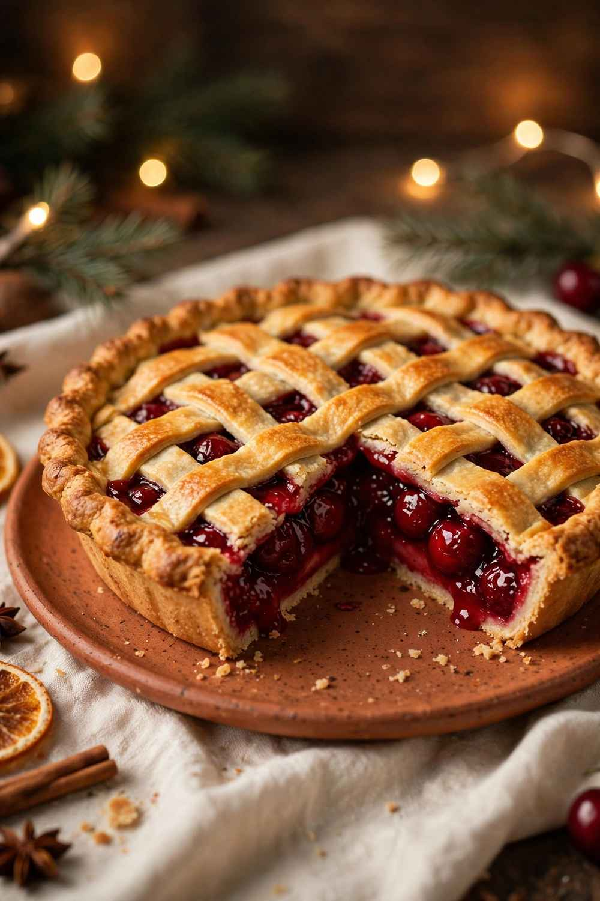
Tart cherries in a golden lattice crust.
Ingredients
- 2 pie crusts
- 4 cups pitted cherries
- 1 cup sugar
- 1/4 cup cornstarch
- 1 tbsp lemon juice
- 1/2 tsp almond extract
- 1 egg for wash.
Directions
- Toss cherries with sugar, cornstarch, lemon juice and almond extract
- Fill the bottom crust and weave the top crust into a lattice
- Brush with egg wash and bake at 400°F for 50 minutes until bubbling
Chocolate, fruit & nut pies
A little richer, a little brighter — chocolate chess, cranberry and sweet potato pies for the second slice.
6. Chocolate Chess Pie

Rich, fudgy chocolate filling.
Ingredients
- 1 pie crust
- 1 1/2 cups sugar
- 1/3 cup cocoa powder
- 2 eggs
- 1/2 cup butter
- 1/3 cup evaporated milk
- 1 tsp vanilla
- pinch of salt.
Directions
- Whisk sugar, cocoa, eggs, melted butter, milk, vanilla and salt until smooth
- Pour into the crust and bake at 350°F for 45 minutes until the edges are set and the center still trembles slightly
- Cool before serving
7. Cranberry Apple Pie
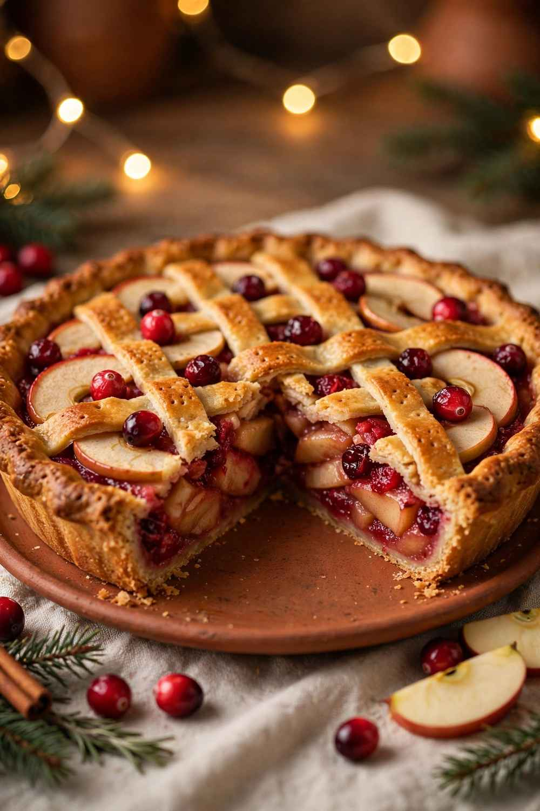
Tart cranberries meet sweet apples.
Ingredients
- 2 pie crusts
- 4 apples
- 1 1/2 cups fresh cranberries
- 3/4 cup sugar
- 2 tbsp cornstarch
- 1 tsp cinnamon
- zest of 1 orange
- 2 tbsp butter.
Directions
- Toss apples, cranberries, sugar, cornstarch, cinnamon and orange zest
- Fill the bottom crust, dot with butter and add the top crust
- Cut slits and bake at 400°F for 50 minutes until bubbling
8. Sweet Potato Pie

Silky sweet potato with warm spice.
Ingredients
- 1 pie crust
- 2 cups mashed sweet potatoes
- 3/4 cup sugar
- 2 eggs
- 1/2 cup evaporated milk
- 1 tsp cinnamon
- 1/2 tsp nutmeg
- 1 tsp vanilla
- 2 tbsp butter.
Directions
- Beat sweet potatoes, sugar, eggs, milk, spices, vanilla and melted butter until smooth
- Pour into the crust and bake at 350°F for 55 minutes until set
- Cool before slicing
9. Mincemeat Pie
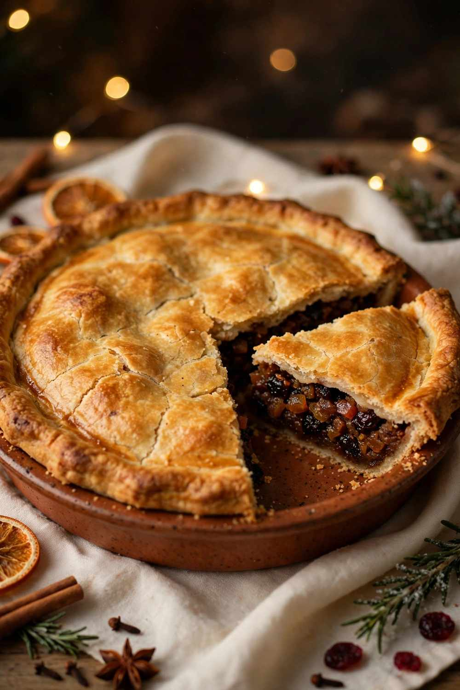
Spiced fruit mincemeat, a holiday classic.
Ingredients
- 2 pie crusts
- 1 jar (27 oz) mincemeat
- 1 apple
- 1/2 cup chopped walnuts
- 1 tbsp lemon juice
- 1 egg for wash
- sugar for sprinkling.
Directions
- Stir mincemeat with diced apple, walnuts and lemon juice
- Fill the bottom crust and cover with the top crust
- Brush with egg wash, sprinkle with sugar and cut slits
- Bake at 400°F for 40 minutes until golden
10. Apple Cranberry Tart

A shallow tart with a glossy fruit top.
Ingredients
- 1 tart crust
- 3 apples
- 1 cup fresh cranberries
- 1/2 cup sugar
- 2 tbsp butter
- 1/4 cup apricot jam
- 1 tsp cinnamon.
Directions
- Arrange thin apple slices in circles over the crust and scatter cranberries
- Sprinkle with sugar and cinnamon; dot with butter
- Bake at 375°F for 40 minutes
- Brush the warm tart with apricot jam
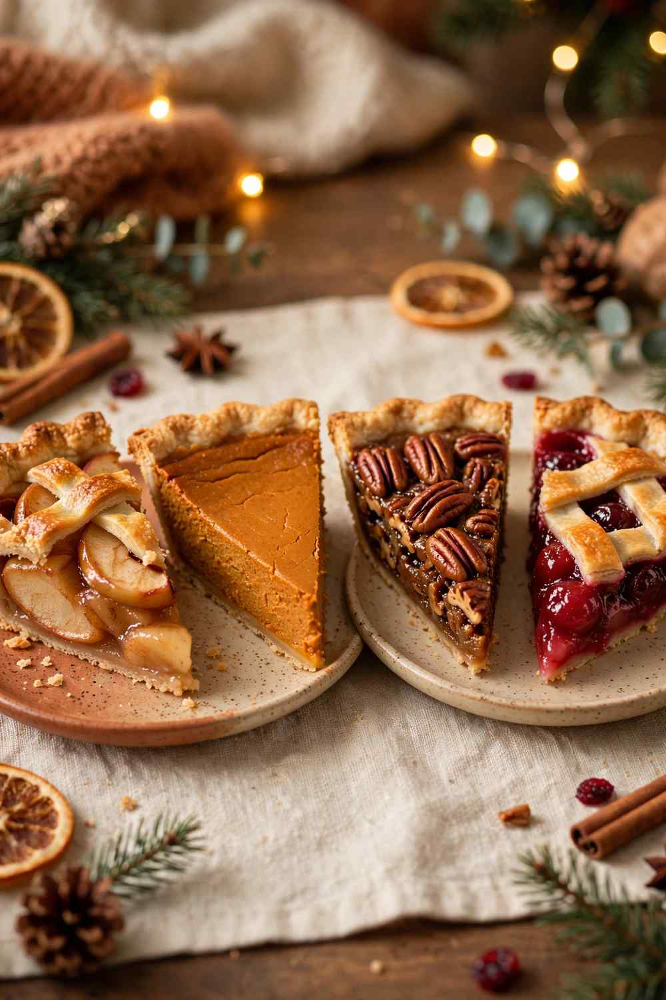
Cream & meringue pies
Silky, airy and chilled — cream pies, chiffon and meringue for the lightest finish to a heavy meal.
11. Pumpkin Chiffon Pie

Light, airy pumpkin in a gingersnap crust.
Ingredients
- 1 gingersnap crust
- 1 cup pumpkin puree
- 1/2 cup sugar
- 1 tsp gelatin
- 1/4 cup water
- 1 tsp pumpkin spice
- 1 cup whipped cream
- 2 egg whites.
Directions
- Bloom gelatin in water and stir into warm pumpkin, sugar and spice
- Fold in whipped cream and stiffly beaten egg whites
- Pour into the crust and chill 4 hours until set
12. Chocolate Cream Pie
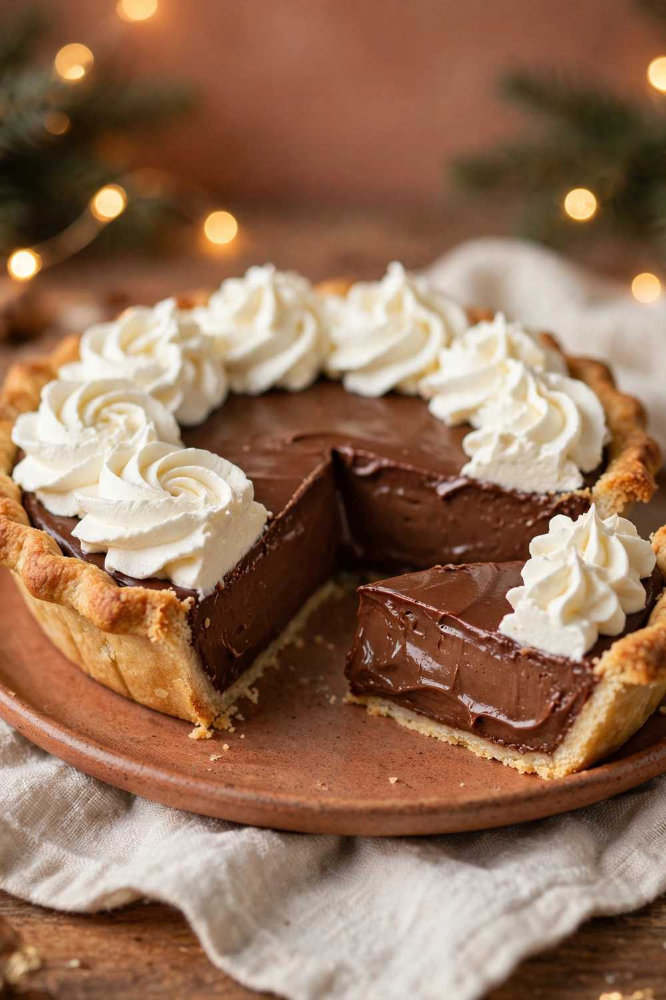
Silky chocolate custard under whipped cream.
Ingredients
- 1 pie crust
- 1 1/2 cups milk
- 3/4 cup sugar
- 1/3 cup cocoa powder
- 3 tbsp cornstarch
- 2 egg yolks
- 2 tbsp butter
- 1 tsp vanilla
- 1 cup whipped cream.
Directions
- Whisk milk, sugar, cocoa, cornstarch and yolks in a saucepan
- Cook on medium heat, stirring, until thick
- Stir in butter and vanilla; pour into the baked crust
- Chill 4 hours and top with whipped cream
13. Lemon Meringue Pie
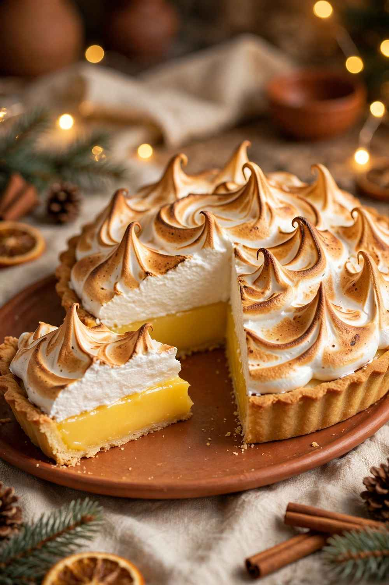
Bright lemon curd under billowy meringue.
Ingredients
- 1 pie crust
- 1 cup sugar
- 1/4 cup cornstarch
- 1 cup water
- 1/2 cup lemon juice
- 3 egg yolks
- 2 tbsp butter
- 3 egg whites
- 1/4 tsp cream of tartar.
Directions
- Cook sugar, cornstarch, water, lemon juice and yolks until thick; stir in butter
- Pour into the baked crust
- Beat egg whites with cream of tartar and sugar to stiff peaks; spread over the filling
- Bake at 350°F for 15 minutes until the meringue is golden
14. Key Lime Pie

Tart lime in a buttery graham crust.
Ingredients
- 1 graham cracker crust
- 1 can (14 oz) sweetened condensed milk
- 1/2 cup key lime juice
- 1 tbsp lime zest
- 3 egg yolks
- 1 cup whipped cream.
Directions
- Whisk condensed milk, lime juice, zest and yolks until thick
- Pour into the crust and bake at 350°F for 15 minutes
- Chill 4 hours and top with whipped cream
15. Bourbon Pecan Pie

Pecan pie with a warm bourbon note.
Ingredients
- 1 pie crust
- 1 cup corn syrup
- 3/4 cup brown sugar
- 3 eggs
- 3 tbsp bourbon
- 2 tbsp butter
- 1 tsp vanilla
- 1 1/2 cups pecan halves.
Directions
- Whisk corn syrup, brown sugar, eggs, bourbon, melted butter and vanilla
- Stir in pecans and pour into the crust
- Bake at 350°F for 55 minutes until just set
- Cool before slicing
Hand pies, galettes & tarts
Small, rustic and easy to serve — hand pies and galettes that need no slicing at the table.
16. Apple Hand Pies
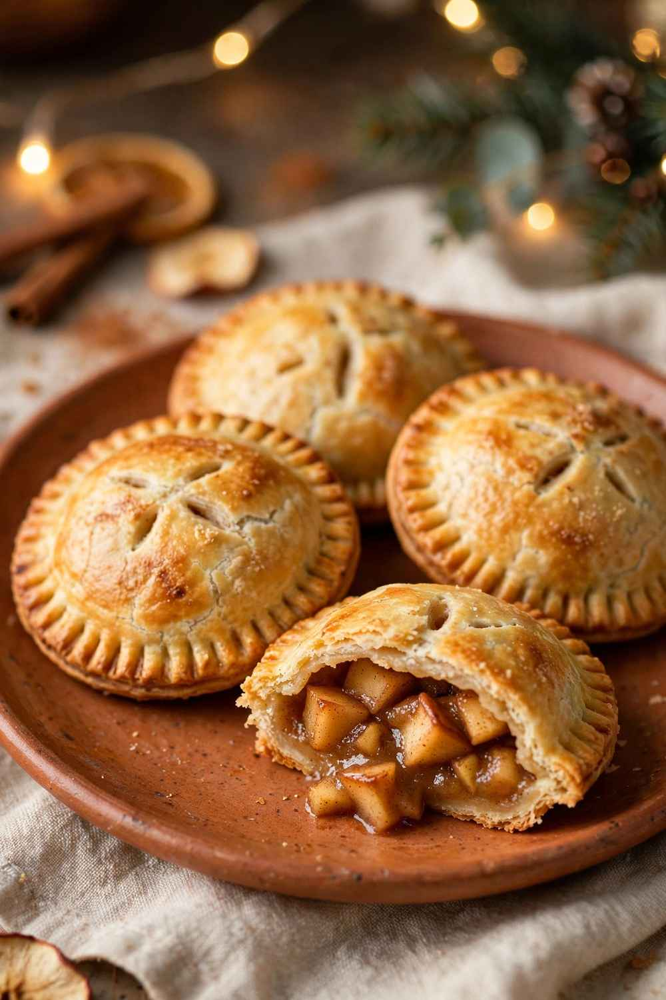
Flaky pockets of spiced apple.
Ingredients
- 2 pie crusts
- 2 apples
- 1/4 cup sugar
- 1 tsp cinnamon
- 1 tbsp flour
- 1 tbsp lemon juice
- 1 egg for wash
- sugar for sprinkling.
Directions
- Cook apples with sugar, cinnamon, flour and lemon juice until just soft; cool
- Cut crusts into rounds, fill and seal the edges with a fork
- Brush with egg wash and sprinkle with sugar
- Bake at 400°F for 20 minutes until golden
17. Cherry Hand Pies

Sweet-tart cherry filling in crisp pastry.
Ingredients
- 2 pie crusts
- 1 can (21 oz) cherry pie filling
- 1 tsp almond extract
- 1 egg for wash
- sugar for sprinkling.
Directions
- Stir almond extract into the cherry filling
- Cut crusts into rounds, fill and seal the edges with a fork
- Brush with egg wash and sprinkle with sugar
- Bake at 400°F for 20 minutes until golden and bubbling
18. Rustic Apple Galette

Free-form apple tart, no pie dish needed.
Ingredients
- 1 pie crust
- 3 apples
- 1/4 cup sugar
- 1 tsp cinnamon
- 1 tbsp flour
- 1 tbsp lemon juice
- 1 egg for wash
- 1 tbsp coarse sugar.
Directions
- Toss apple slices with sugar, cinnamon, flour and lemon juice
- Arrange on the crust, leaving a 2-inch border; fold the edges up
- Brush with egg wash and sprinkle with coarse sugar
- Bake at 375°F for 40 minutes until golden
19. Pear Almond Tart

Poached pears over frangipane.
Ingredients
- 1 tart crust
- 3 pears
- 1/2 cup almond flour
- 1/4 cup sugar
- 1/4 cup butter
- 1 egg
- 1/2 tsp almond extract
- sliced almonds.
Directions
- Beat almond flour, sugar, butter, egg and almond extract into a frangipane
- Spread in the crust and arrange pear slices on top
- Sprinkle with sliced almonds and bake at 375°F for 35 minutes until golden
20. Cranberry Pear Pie
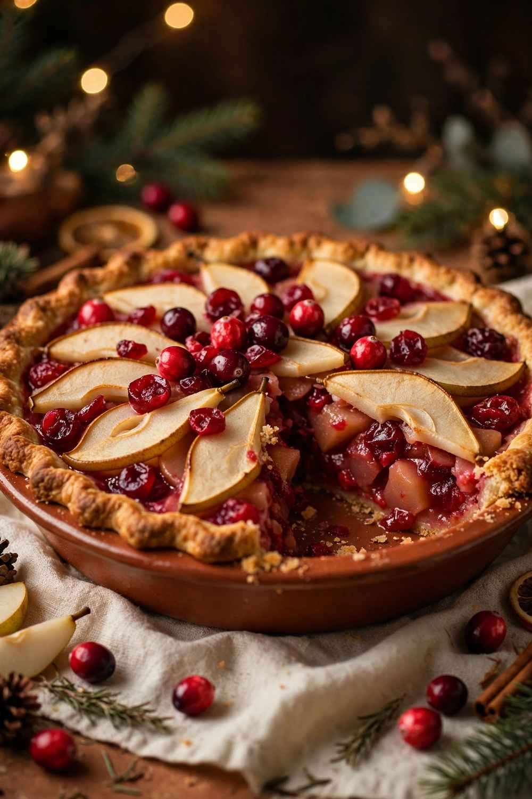
Juicy pears with jewel-red cranberries.
Ingredients
- 2 pie crusts
- 4 pears
- 1 1/2 cups fresh cranberries
- 3/4 cup sugar
- 2 tbsp cornstarch
- 1 tsp cinnamon
- 1/2 tsp ginger
- 2 tbsp butter.
Directions
- Toss pears, cranberries, sugar, cornstarch, cinnamon and ginger
- Fill the bottom crust, dot with butter and add the top crust
- Cut slits and bake at 400°F for 50 minutes until bubbling
Showstoppers & cozy finishes
The pies that end the meal with a flourish — chocolate, custard and spiced finishes worth saving room for.
21. Black Forest Pie

Chocolate and cherries with whipped cream.
Ingredients
- 1 chocolate cookie crust
- 1 can (21 oz) cherry pie filling
- 1 cup chocolate pudding
- 1 cup whipped cream
- 1/4 cup chocolate shavings
- maraschino cherries.
Directions
- Spread half the cherry filling over the crust
- Spoon chocolate pudding over the cherries
- Top with the remaining cherry filling and chill 4 hours
- Top with whipped cream, chocolate shavings and cherries
22. Buttermilk Chess Pie

Tangy, custardy Southern classic.
Ingredients
- 1 pie crust
- 1 1/2 cups sugar
- 3 eggs
- 1/2 cup buttermilk
- 1/4 cup butter
- 1 tbsp flour
- 1 tbsp cornmeal
- 1 tsp vanilla
- 1 tbsp lemon juice.
Directions
- Whisk sugar, eggs, buttermilk, melted butter, flour, cornmeal, vanilla and lemon juice
- Pour into the crust and bake at 350°F for 50 minutes until the center is just set
- Cool before slicing
23. Apple Butter Pie
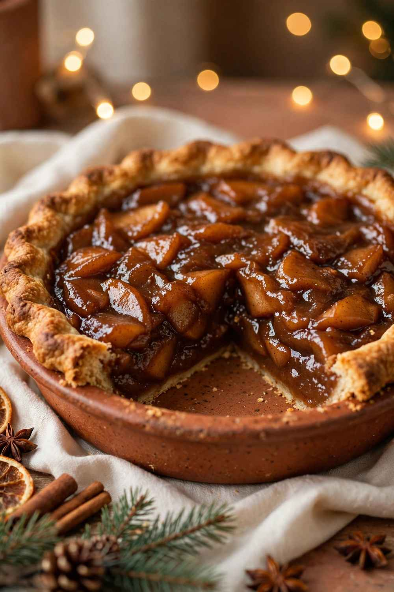
Deep apple-butter flavor, spiced and rich.
Ingredients
- 1 pie crust
- 1 1/2 cups apple butter
- 3/4 cup sugar
- 2 eggs
- 1/2 cup evaporated milk
- 1 tsp cinnamon
- 1/2 tsp nutmeg
- 1 tsp vanilla.
Directions
- Whisk apple butter, sugar, eggs, milk, spices and vanilla until smooth
- Pour into the crust and bake at 350°F for 50 minutes until set
- Cool completely before slicing
24. Cranberry Orange Cream Pie
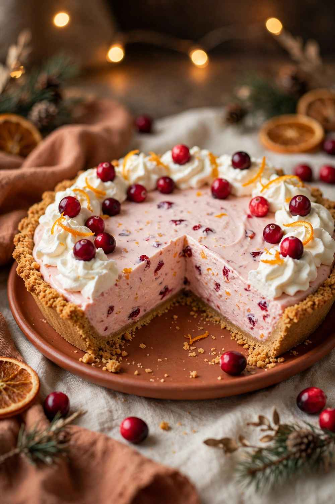
Tart cranberries and orange in a creamy filling.
Ingredients
- 1 graham cracker crust
- 1 cup cranberry sauce
- 8 oz cream cheese
- 1/2 cup sugar
- zest of 1 orange
- 1 tbsp orange juice
- 1 cup whipped cream.
Directions
- Beat cream cheese, sugar, orange zest and orange juice until smooth
- Fold in cranberry sauce and half the whipped cream
- Pour into the crust and chill 4 hours
- Top with the remaining whipped cream
25. Gingerbread Pumpkin Pie
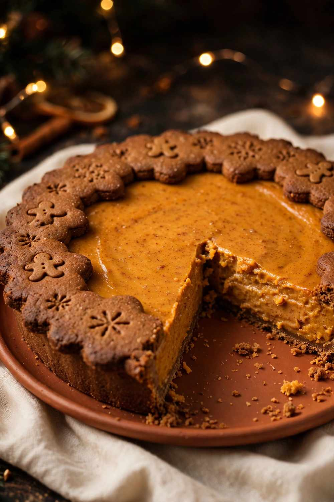
Pumpkin pie in a spiced gingerbread crust.
Ingredients
- 1 gingerbread cookie crust
- 1 can (15 oz) pumpkin puree
- 3/4 cup brown sugar
- 2 eggs
- 1 cup evaporated milk
- 1 tsp cinnamon
- 1/2 tsp ginger
- 1/4 tsp nutmeg
- 1 tsp vanilla.
Directions
- Whisk pumpkin, brown sugar, eggs, milk, spices and vanilla until smooth
- Pour into the crust and bake at 425°F for 15 minutes, then 350°F for 40 minutes until just set
- Cool completely before slicing
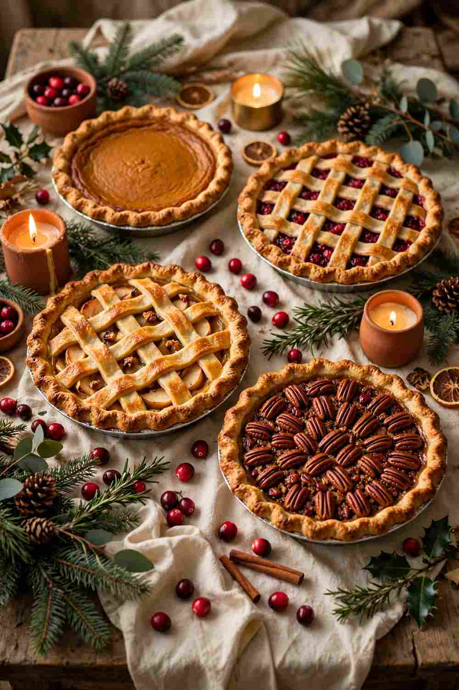
Make-ahead & serving tips
Bake double-crust pies the day before so the filling sets and the slices stay neat — reheat slices gently in a low oven if you like them warm. Chill cream, chiffon and meringue pies for at least 4 hours so they slice cleanly, and add whipped cream just before serving. Bake hand pies and galettes the morning of the meal for the crispest crust. Most of these pies keep well: store leftovers covered in the fridge for up to 3 days, and freeze unbaked double-crust pies for up to a month.
Related articles
More roundups from the same table:
- 30+ Christmas Cookie Recipes Everyone Will Love — classic, chocolate, spiced, filled and decorated cookies.
- 25+ No-Bake Christmas Desserts for a Crowd — truffles, cheesecakes, bars and treats.
- 25+ Christmas Snowball Cookie Recipes — buttery, melt-in-your-mouth snowball cookies in every flavor, rolled in powdered sugar.
- 30+ Vintage Christmas Cookie Recipes — old-fashioned cookies from grandma's kitchen, from spritz and snickerdoodles to molasses and jam thumbprints.
Keep exploring
- Browse the Desserts & Baking roundups — cookies, cakes, pies and sweet bakes.
- Browse all six categories — breakfast, lunch and dinner, desserts, air fryer, healthy recipes, and appetizers.
- More about the kitchen — what The Tasty Recipe Co is and how it works.
About The Tasty Recipe Co: Learn how we research, organize and review our food collections — see our About Us and Editorial Policy pages.
Recipe results can vary with ingredients, equipment, and technique. See our Disclaimer for food-safety and allergy notes.